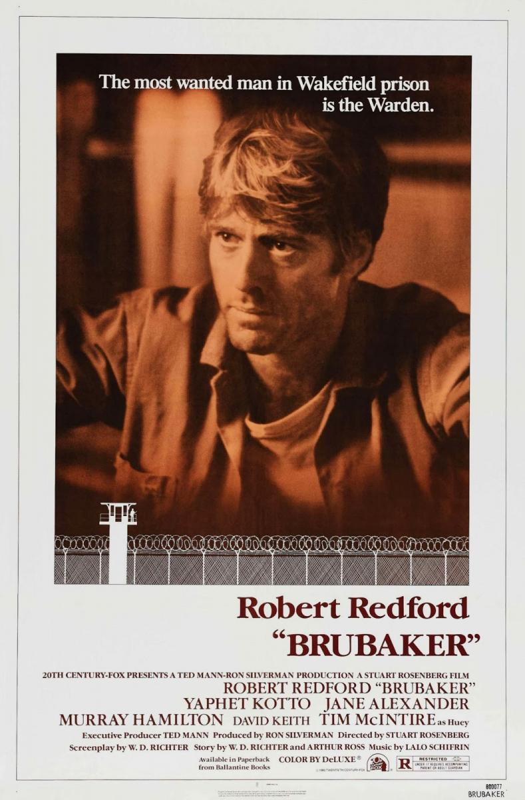
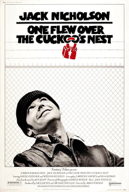

The Shawshank Redemption (1994)

Clasificación: R
Duración: 2h22m
Género: Drama
Fecha de Lanzamiento: 14/10/1994
Sinopsis: abarca una mirada optimista de la vida,
contando la historia de dos amigos, Robbins y Freeman, en una
prisión. Se enfatiza el no perder las esperanzas, incluso en
las más inhóspitas situaciones.
Dirigido por: Frank Darabont
Escrito por: Stephen King y Frank Darabont
Elenco: Tim Robbins, Morgan Freeman, Bob Gunton,
William Sadler, Clancy Brown, Gil Bellows, Mark Rolston, ...
IMDB:
9.3/10
Rotten Tomatoes:
90%
Metacritic:
80%
Recomendados
Escape From Alcatraz (1979)

The Great Escape (1963)

The Green Mile (1999)

Brubaker (1980)
Cool Hand Luke (1967)

One Flew Over The... (1975)